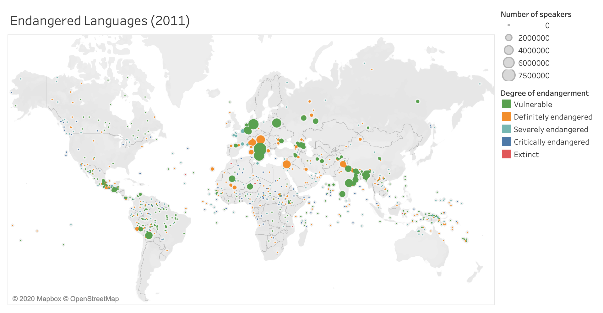

Beta Prototype
Latitude, Longitude, and Langitude
This is a very rough prototype of a map visualization created in Tableau showing the UNESCO endangered languages dataset.
Question
Are there more endangered languages in certain parts of the world than in others? (This has implications on language preservation efforts, for example where should funding and researchers be sent?)
Answer
There are a lot of endangered languages all over the world, but we see a particular lack in parts of Europe (where there are fewer languages with more speakers) and in the United States. This probably reflects historical realities over centuries of state centralization and language policy (for example, historical France and modern China). Younger states or those that underwent colonization may have endangered languages that are still present and not yet stamped out by the dominant lingua franca.
Additionally, this dataset may simply be incomplete or lacking latitude/longitude data; I would have expected more endangered languages in Australia and Chile, for example, but the visualization does not reflect any languages there.
Encoding
This is a proportional symbol map: the size of each dot represents the number of speakers*, its location represents where it's spoken in the world, and the color encodes Degree of Endangerment ("vulnerable" (not spoken by children outside the home), "definitely endangered" (children not speaking), "severely endangered" (only spoken by the oldest generations), "critically endangered" (spoken by few members of the oldest generation, often semi-speakers), "extinct" (no living speakers)). As the scale indicates, there is a huge variation between 0 speakers and the maximum of 7.5+ million speakers ("Southern Italian"), so it's difficult to really get a sense of those endangered with fewer languages; additionally, bubbles may overlap. In the D3 final visualization, this can be addressed with interactivity.
Interactivity
- I definitely intend to implement details-on-demand functionality to show more information about each language when its corresponding symbol is moused over (language name at minimum).
- Since this is a map visualization, it makes sense to be able to add zooming and panning functionality (we've seen examples where simple clicking and dragging triggers movement, but if possible I'd like to have dedicated buttons to avoid accidental movement.)
- I want to add a filtering capability to let users focus on languages in a certain range of Number of Speakers, or in a certain category of endangerment. Through filtering, this may trigger the map (and using a different scale for different categories, so the Critically Endangered data subset doesn't use the same scale as the Vulnerable data subset.)
- I'm not entirely sure that using color to encode Degree of Endangerment is the best use of that visual channel, since in general Degree of Endangerment is strongly correlated with how many speakers it has. Since my Endangered Language datset includes ISO639-3 codes, I could cross-reference with the Glottolog dataset and add information about Top-level family (in the details pane, if nothing else); however, there may be too many top-level language families for that to be a useful visual metric. Additionally, not all languages have a top-level family in Glottolog, so that information would be missing.
- If time and the constraints of the dataset permit, I'd like to implement brushing on language families. It's true that languages in a particular language family tend to be located geographically close together, but there can be multiple language families in a particular area, so this will add some visual information.